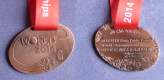 2014 Beijing World Championships (Bronze) |
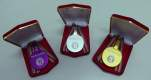 2013 Taichung Taichung Open |
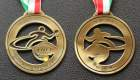 2013 Lignano European Championships (Bronze) |
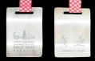 2011 Split European Championships (Silver) |
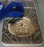 2010 Gwangju World Championships (Bronze) |
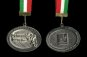 2009 Genova European Championships (Silver) |
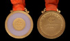 2008 Beijing Paralympic Games (Gold) |
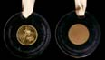 2007 Kranjska Gora European Championships (Gold) |
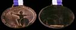 2006 Montreux World Championships (Gold) |
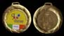 2005 Lido di Jesolo European Championships (Gold) |
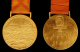 2004 Athens Paralympic Games (Gold) |
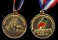 2003 Zagreb European Championships (Gold) |
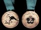 2002 Taipei World Championships (Gold) |
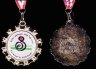 2002 Roermond World Team Cup (Gold) |
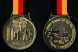 2001 Frankfurt European Championships (Gold) |
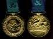 2000 Sydney Paralympic Games (Gold) |
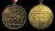 1999 Piestany European Championships (Gold) |
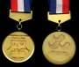 1998 Paris World Championships (Gold) |
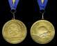 1997 Stockholm European Championships (Gold) |
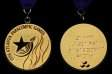 1996 Atlanta Paralympic Games (Gold) |
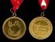 1995 Hillerod European Championships (Gold) |
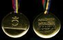 1992 Barcelona Paralympic Games (Gold) |
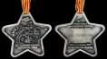 1991 Salou European Championships (Silver) |
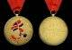 1990 Assen World Championships (Gold) |
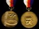 1988 Seoul Paralympic Games (Gold) |
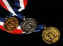 1980 Arnhem Paralympic Games |